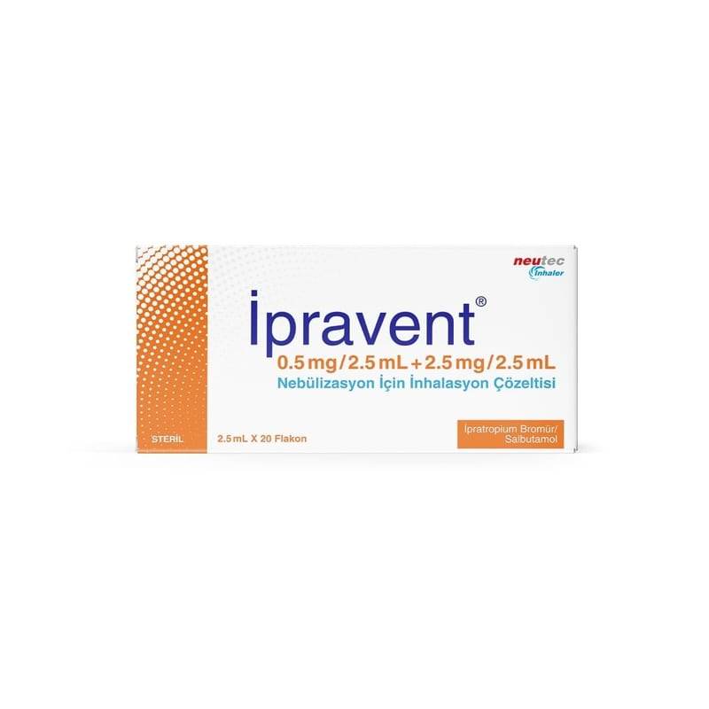

İpravent 0.5 mg /2.5 ml + 2.5 mg /2.5 ml Nebülizasyon İçin İnhalasyon Çözeltisi, 20 Flakon

Ne için kullanılır
KT · Bölüm 1İlacınızın adı İPRAVENT’tir. Bu ilacı, nebülizör adı verilen bir aletle kullanacaksınız. Bu alet, ilacınızı solunum yoluyla alabilmeniz için buğu haline çevirir. İPRAVENT iki farklı ilaç içerir:
• İpratropium bromür • Salbutamol sülfat
Her iki ilaç da “bronkodilatörler”, yani “bronş açıcılar” adı verilen bir ilaç grubunda yer alır. Bu ilaçlar “kronik obstrüktif akciğer hastalığı” ya da kısaca KOAH denilen bir hastalıkta daha kolay nefes almayı sağlamak için kullanılır. Bu ilaçlar, solunum yolunuzu açarak etki gösterir.
İPRAVENT, kutuda, Al folyoya sarılmış, tek kullanımlık yarı saydam düşük yoğunluklu polietilen 2,5 mL’lik flakonda 20 adet olarak kullanıma sunulmaktadır.